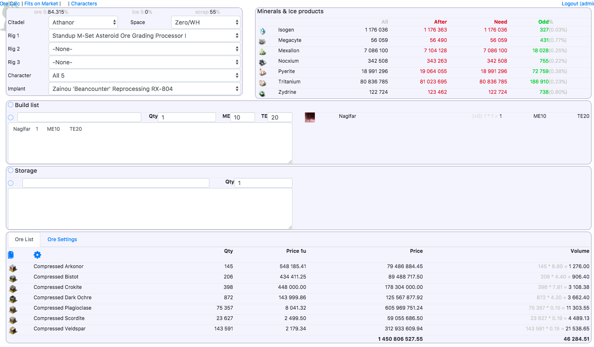
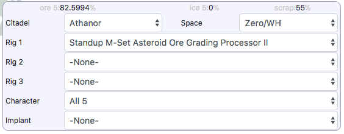
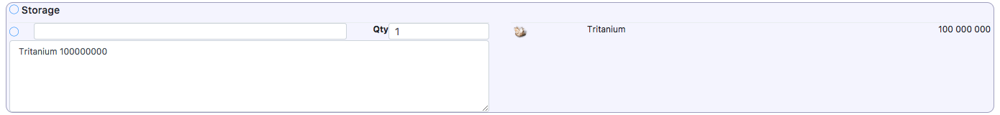
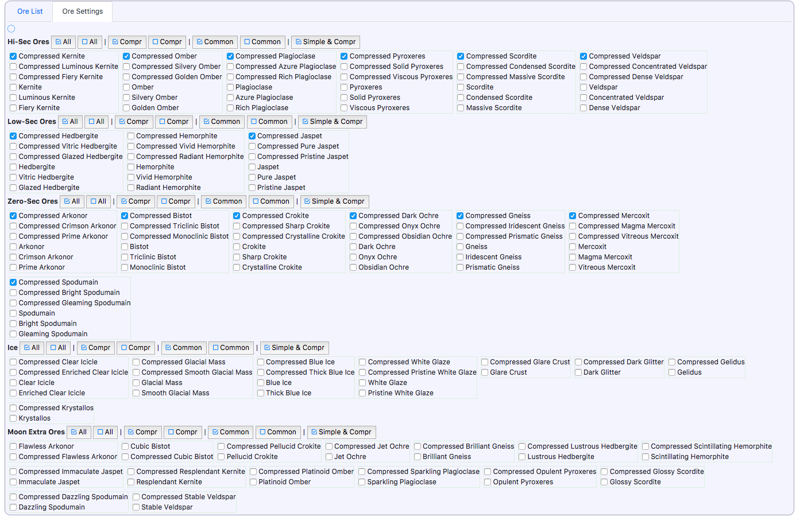
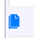
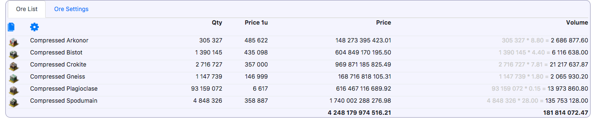
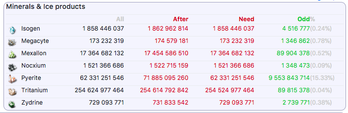

This is tutorial page for Aes Publica project
Aes Publica is help utility for eveonline game. Its main purpose is to calculate amounts and kinds of ores needed for building given set of items.
So, here you can found an answer for the question "How much veldspar I need to build one Avatar and 100500 Drakes"
This is achieved with help of simplex method. God bless those mathematicians who invented this stuff.
All sources for this project can be found on https://github.com/sergey-koumirov/AesPublica
Let's begin with the beginning.
Registration & Login
Nothing unusual here.
Please register and login
General workflow
There is 5 areas on main page (from left to right, from top to bottom):
- refinery settings
- minerals info
- build list
- storage list
- ores result & settings

-
Change refinery settings according to your situation. Don't forget choose at least one rig. You can add your actual characters, but usually All V is enought.

-
Next thing you need to do is to add items to build. Use textarea or search field right under the text "Build list" and don't forget to click on blue mark for saving changes.

-
If you already have some ore, minerals or spare parts you can add them to storage. Ores will be refined to minerals and all items from storage will be subtracted from needed materials during calculation.

-
Next things to do is to choose ores which will be allowed in result. Don't forget save settings (click blue checkmark in the left top corner)

-
After all this preparations you click blue gear and should see smth like this. Click  to copy result to clipboard.

-
Next look at minerals area. There is four columns
- All: minerals need to build items from build list (storage is ignored)
- After: minerals which will be received after reprocessing result ores
- Need: minerals needed to build items from build list taking into account items from storage
- Odd: After - Need

Feedback
If you've found some bugs or have questions - please create issue on github